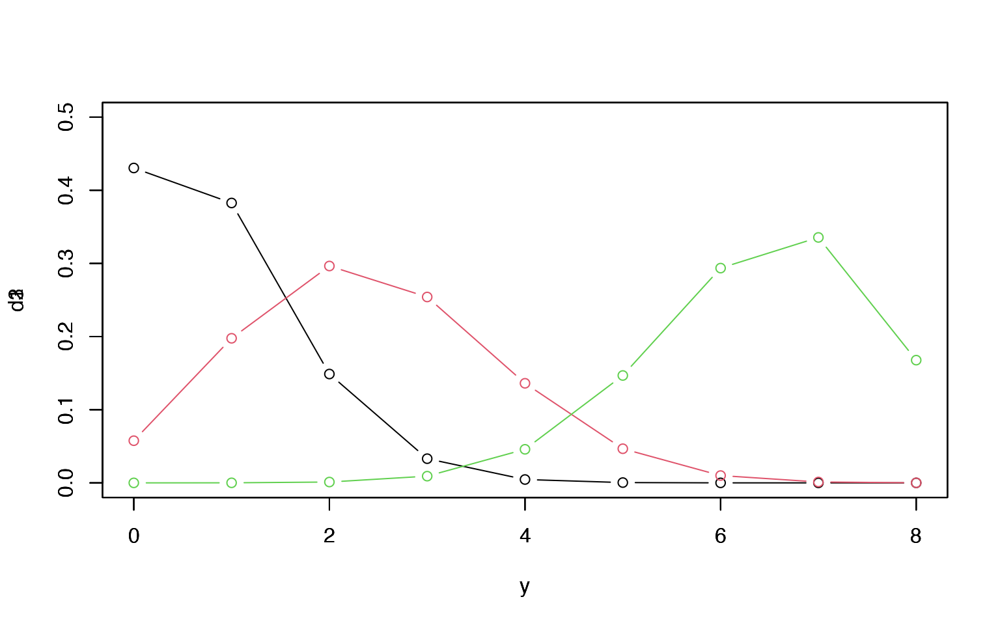
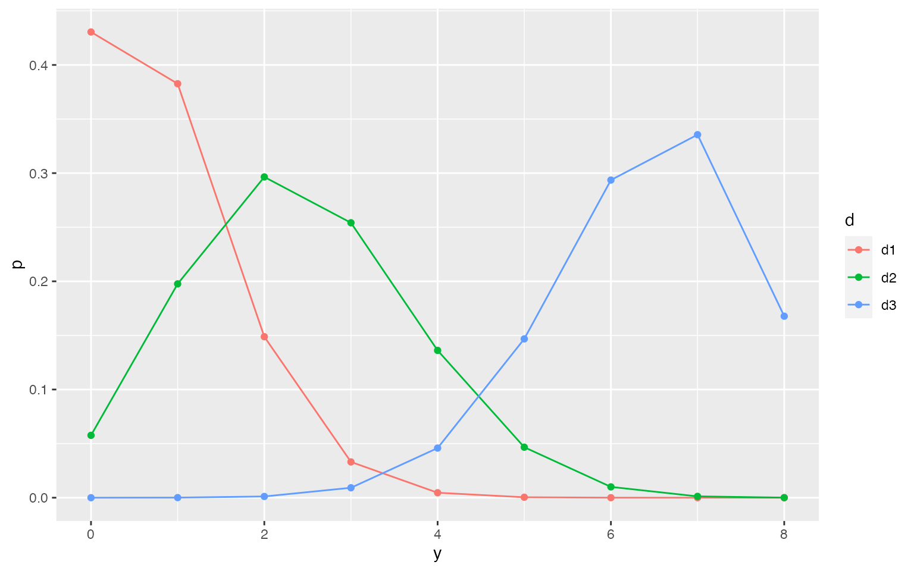
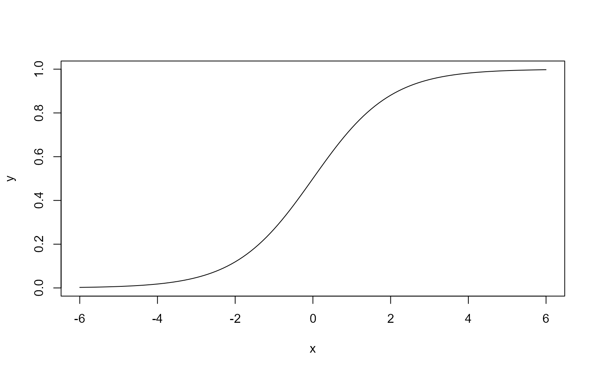
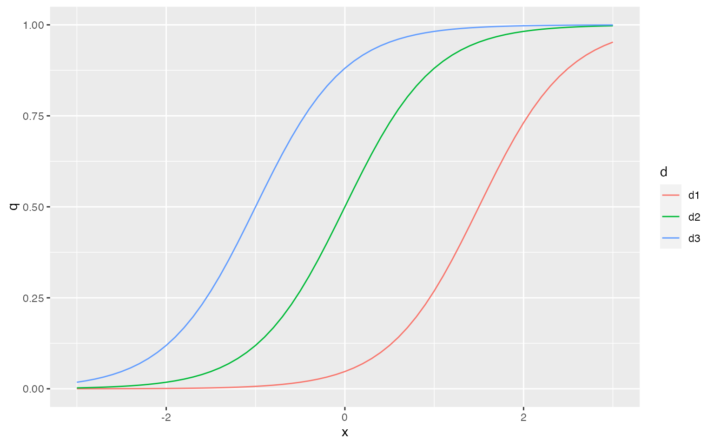
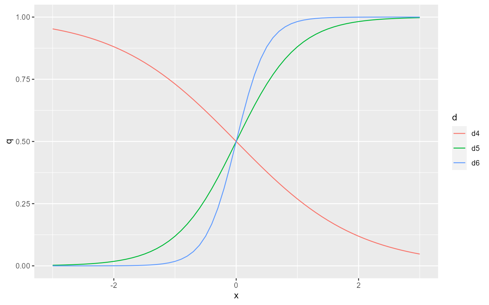
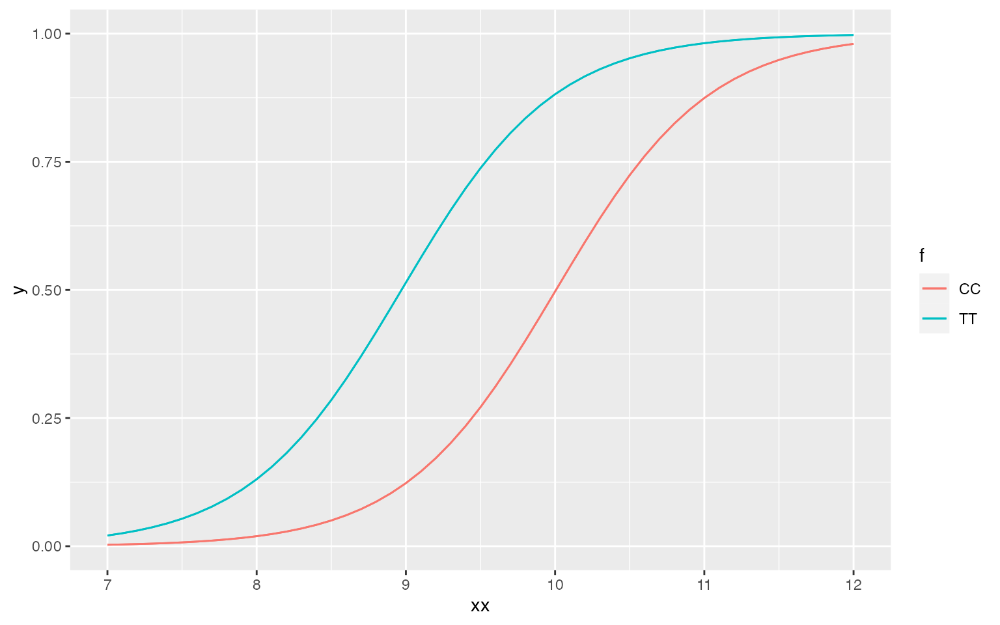
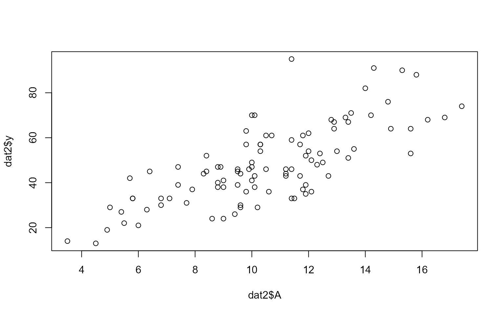

6. GLMの応用範囲を広げる–ロジスティック回帰など–
6.1 さまざまな種類のデータで応用できるGLM
- 表6.1: Rのglm()でよく使われる確率分布
- 離散変数か連続変数か
- 離散変数
- 二項分布：成功確率\(p\)の0/1をn試行実施したときに1となる回数
- ポアソン分布：平均\(\lambda\)の度数データをn回取得したときに得られる値
- 負の二項分布：成功確率\(p\)の0/1でk回0が出る前に1が出た回数
- 連続変数
- ガンマ分布：めったに（\(1/\lambda\))起きない事象が\(\alpha\)回起きるまでの時間
- 正規分布：負の値も取り得る連続量データ。どういうデータ？
- 反応時間：正規分布しない。対数正規分布？
- 正答率：正規分布しない。二項分布？
- じゃあ、どんなデータ？
- 離散変数
- 離散変数か連続変数か
6.2 例題：上限のあるカウントデータ
- 例題データ：ある植物の\(個体_i\)の種子\(N_i\)個を観察したときの生存数\(y_i\)個。死んでるのは\(N_i-y_i\)個。体サイズ\(x_i\)や施肥処理\(f_i\)が影響する。100個の個体を調べる。
- データを読み込んで概要をみてみる
dat<-read.csv('kubobook_2012-2/binomial/data4a.csv')
dat$f<-as.factor(dat$f)
summary(dat)## N y x f
## Min. :8 Min. :0.00 Min. : 7.660 C:50
## 1st Qu.:8 1st Qu.:3.00 1st Qu.: 9.338 T:50
## Median :8 Median :6.00 Median : 9.965
## Mean :8 Mean :5.08 Mean : 9.967
## 3rd Qu.:8 3rd Qu.:8.00 3rd Qu.:10.770
## Max. :8 Max. :8.00 Max. :12.4406.3 二項分布で表現する「あり・なし」カウントデータ
- 上限があるカウントデータだからポアソン分布では表現できない
- 二項分布
- \(p(y|N, q)={N \choose
y}q^y(1-q)^{N-y}\)
- \(p(y|N, q)\): N個中y個で事象が生起する確率。qは事象の生起確率。
- \({N \choose y}\): 場合の数。N個の観察からy個の生存種子を選び出す場合の数。どのy個でもいいのでそれのこと。
- \(p(y|N, q)={N \choose
y}q^y(1-q)^{N-y}\)
- \(N\)を8として\(q\)を変えて二項分布を書いてみる。
y<-seq(0,8)
N<-8
d1<-dbinom(y, N, 0.1)
d2<-dbinom(y, N, 0.3)
d3<-dbinom(y, N, 0.8)
# Rのplot()でグラフ
plot(y,d1, type='b', col=1, ylim=c(0,0.5))
par(new=T)
plot(y,d2, type='b', col=2, ylim=c(0,0.5))
par(new=T)
plot(y,d3, type='b', col=3, ylim=c(0,0.5))
# ggplot2でグラフ
# データの加工にtidyverseをつかってる
library(tidyverse)
library(ggplot2)
tdat<-rbind(y,d1,d2,d3) %>% t %>% data.frame %>% tidyr::pivot_longer(!y, names_to = 'd', values_to = 'p')
g<-ggplot(tdat, aes(x=y, y=p, color=d))
g<-g+geom_line()+geom_point()
plot(g)
6.4 ロジスティック回帰とロジットリンク関数
- 二項分布を使ったGLM
- ロジスティック回帰
6.4.1 ロジットリンク関数
- ロジスティック回帰
- 二項分布
- ロジットリンク関数
x<-seq(-6,6,0.1)
y<-plogis(x)
plot(x,y, type='l')
logistic <- function(z) 1/(1+exp(-z))
plot(x, logistic(x), type='l')
- 種子の生存・死亡を二項分布で表す
- パラメータ\(q_i\)：種子の生存確率, \(0\leqq q_i\leqq1\)
- これをうまく線形予測子と関連づけるためのリンク関数としてロジット関数を使うんだけど、ロジット関数って何っていう話の前にロジスティック関数
- ロジスティック関数
- \(q_i=logistic(z_i)=\frac{1}{1+exp(-z_i)}\)
- 変形する
- \(exp(-z)=\frac{1}{q_i}-1\)
- \(z_i=-log(\frac{1}{q_i}-1)\)
- \(z_i=log(\frac{q_i}{1-q_i})=logit(q_i)\) (logのカッコ内を逆数にする＝符号反転)
- \(q_i=logistic(z_i), z_i=\beta_1+\beta_2 x\)でさまざまな\(\beta\)のときのxとqの関係
- ロジスティック関数
library(tidyverse)
library(ggplot2)
beta2<-c(-1,2,4)
beta1<-c(-3,0,2)
x<-seq(-3,3,0.1)
d1<-logistic(beta1[1]+beta2[2]*x)
d2<-logistic(beta1[2]+beta2[2]*x)
d3<-logistic(beta1[3]+beta2[2]*x)
d4<-logistic(beta1[2]+beta2[1]*x)
d5<-logistic(beta1[2]+beta2[2]*x)
d6<-logistic(beta1[2]+beta2[3]*x)
dat2<-rbind(x,d1,d2,d3) %>% t %>% data.frame %>% tidyr::pivot_longer(!x, names_to = 'd', values_to = 'q')
dat3<-rbind(x,d4,d5,d6) %>% t %>% data.frame %>% tidyr::pivot_longer(!x, names_to = 'd', values_to = 'q')
gdat2<-ggplot(dat2, aes(x=x, y=q, col=d))
gdat2<-gdat2+geom_line()
gdat3<-ggplot(dat3, aes(x=x, y=q, col=d))
gdat3<-gdat3+geom_line()
plot(gdat2)
plot(gdat3)
6.4.2 パラメータ推定
- 二項分布の式から尤度関数、対数尤度関数を得て、対数尤度\(logL\)を最大にする\(q_i\)をもとめる。
- ただし、\(q_i=\beta_1+\beta_2x+\beta_3f\)
- 解析的に解くのは大変だけど、glm()がやってくれる
- glm(cbind(y, N-y)~x+f, data=dat, famlily=binomial)
- cbind()は列の結合。第1引数は1行2列の行列ということ。
- glm(cbind(y, N-y)~x+f, data=dat, famlily=binomial)
- 例のデータでやってみる
library(tidyverse)
library(ggplot2)
res<-glm(cbind(y,N-y)~x+f, data=dat, family=binomial)
print(res)##
## Call: glm(formula = cbind(y, N - y) ~ x + f, family = binomial, data = dat)
##
## Coefficients:
## (Intercept) x fT
## -19.536 1.952 2.022
##
## Degrees of Freedom: 99 Total (i.e. Null); 97 Residual
## Null Deviance: 499.2
## Residual Deviance: 123 AIC: 272.2xx<-seq(7,12,0.1)
ff<-rep('C',length(xx))
ff2<-rep('T',length(xx))
CC<-predict(res,newdata=data.frame(x=xx, f=ff), type='response')
TT<-predict(res,newdata=data.frame(x=xx, f=ff2), type='response')
tfdat<-rbind(xx,CC,TT) %>% t %>% data.frame %>% tidyr::pivot_longer(!xx, names_to = 'f', values_to = 'y')
ctg<-ggplot(tfdat, aes(x=xx, y=y, color=f))
ctg<-ctg+geom_line()
plot(ctg)6.4.3 ロジットリンク関数の意味・解釈
- パラメータの解釈
- ロジット関数
- \(logit(q_i)=log\frac{q_i}{1-q}=線形予測子\)
- \(\frac{1_i}{1-q_i}=exp(\beta_1+\beta_2x_i+\beta_3f_i)\)
- \(\frac{1_i}{1-q_i}=exp(\beta_1)exp(\beta_2x_i)exp(\beta_3f_i)\)
- 左辺\(\frac{1_i}{1-q_i}\)オッズ比：生存する確率/生存しない確率
- 右辺にパラメータの推定値を代入し、切片を省略
- \(\frac{1_i}{1-q_i}\propto exp(1.95x_i)exp(2.02f_i)\)
- 体サイズが1増えると
- \(\frac{1_i}{1-q_i}\propto exp(1.95x_i)exp(1.95)exp(2.02f_i)\)
- となるので、exp(1.95)=7倍くらい増える
- 同様に施肥処理ではexp(2.02)=7.5倍くらい増える
- オッズと「リスク」
- 発生確率が低いとき、リスクは近似的にはオッズ比に等しい
- 線形予測子内のある要因のパラメータのexp()分、リスクが減る/増えることになる
6.4.4 ロジスティック回帰のモデル選択
- \(x_i\)と\(f_i\)を含むモデルが最も良く予測するモデルかは分からない
- AICによるモデル選択を選ぼう
- MASSパッケージのstepAIC()関数
- ネストしているモデルのAICを比較して、AICが最小になるモデルを選択
- やってみる
- x+fモデルのAICが272.21となり最小（表6.2にはいろいろな値も含めて）
library(MASS)##
## Attaching package: 'MASS'## The following object is masked from 'package:dplyr':
##
## selectstepAIC(res)## Start: AIC=272.21
## cbind(y, N - y) ~ x + f
##
## Df Deviance AIC
## <none> 123.03 272.21
## - f 1 217.17 364.35
## - x 1 490.58 637.76##
## Call: glm(formula = cbind(y, N - y) ~ x + f, family = binomial, data = dat)
##
## Coefficients:
## (Intercept) x fT
## -19.536 1.952 2.022
##
## Degrees of Freedom: 99 Total (i.e. Null); 97 Residual
## Null Deviance: 499.2
## Residual Deviance: 123 AIC: 272.26.5 交互作用行の入った線形予測子
- 交互作用項：\(x_i\)と\(f_i\)の積の効果
- 肥料を与えるかどうかによって体サイズの効果が全く違う、とか。
- \(glm(cbind(y, N-y)\sim x*f, family='binomial', data=dat)\)
- 今の例で実施してみる（下）
- 予測はほとんど変わらない
- AICは交互作用項がないほうが小さい（272.21）
- 交互作用項の解釈は難しい
- 予測の図をみる
- むやみに交互作用項を入れない
- 交互作用項を含むモデルのAICが最小になることもあるけど、つじつまを合わせてるだけのこもあるので注意
library(MASS)
res2<-glm(cbind(y, N-y)~x*f, family=binomial, data=dat)
stepAIC(res2)## Start: AIC=273.61
## cbind(y, N - y) ~ x * f
##
## Df Deviance AIC
## - x:f 1 123.03 272.21
## <none> 122.43 273.61
##
## Step: AIC=272.21
## cbind(y, N - y) ~ x + f
##
## Df Deviance AIC
## <none> 123.03 272.21
## - f 1 217.17 364.35
## - x 1 490.58 637.76##
## Call: glm(formula = cbind(y, N - y) ~ x + f, family = binomial, data = dat)
##
## Coefficients:
## (Intercept) x fT
## -19.536 1.952 2.022
##
## Degrees of Freedom: 99 Total (i.e. Null); 97 Residual
## Null Deviance: 499.2
## Residual Deviance: 123 AIC: 272.2CC2<-predict(res2,newdata=data.frame(x=xx, f=ff), type='response')
TT2<-predict(res2,newdata=data.frame(x=xx, f=ff2), type='response')
tfdat2<-rbind(xx,CC2,TT2) %>% t %>% data.frame %>% tidyr::pivot_longer(!xx, names_to = 'f', values_to = 'y')
ctg2<-ggplot(tfdat2, aes(x=xx, y=y, color=f))
ctg2<-ctg+geom_line()
plot(ctg2)
6.6 割算値の統計モデリングはやめよう
- 何かを何かで割った値をデータにすることの害
- 情報が減る：300/1000と3/10は同じではない
- 分布の形が不明：分子も分母も誤差を持つとき、その比はどういう分布に従う？
6.6.1 割算値いらずのオフセット項わざ
- 統計モデリングでは割算や変数変換は不要
- Nのうちy個生存
- 生存率y/Nをデータとするのではなく、yとNをデータとする。二項分布にcbind(y,N-y)を使う。
- Nのうちy個生存
- 例題：単位面積あたりの個体数（e.g., 人口密度）
- 架空データ
- 森林に調査地100箇所（\(i\)は1から100まで）
- 調査地ごとの面積\(A_i\)は異なる
- 調査地\(i\)の明るさ\(x_i\)を計測
- 調査地\(i\)の植物個体数\(y_i\)を記録
- 個体密度が\(x_i\)にどう影響されるか
- \(y_i\)を\(A_i\)で割りたくなるけど、そうはしない
- \(\frac{平均個体数\lambda_i}{A_i}=人口密度\)
- \(\lambda_i=A_i \times 人口密度\)
- ここで人口密度をexp(式)とする。ここが結構謎。人口密度は負になることはない。負になることがない値をモデルに入れるときにexp()に入れるというのがよく使う技っぽい。
- \(\lambda_i=A_iexp(\beta_i+\beta_2x_i)\): 平均個体数は人口密度に面積をかけたもの（ただし、人口密度は光に影響されると考えるので、\(x_i\)項を含む式とする
- \(\lambda_i=exp(\beta_1+\beta_2x_i+logA_i)\)
- これで対数リンク関数、ポアソン分布のGLMの形
- ただし、線形予測子の中に計数を持たない\(logA_i\)が入っている＝オフセット項
- もともと、平均個体数の分母にあったものだから
- glm()でオフセット項を指定できる
- オフセット項
- 単位面積あたり、単位時間あたりの計測に応用可能
- 観察時間の対数をオフセット項にする、など
- 比や密度などにも応用可能
- どっちもばらつきをもっててもOKだけど、それはこの本には出てこない
- 単位面積あたり、単位時間あたりの計測に応用可能
- 架空データ
6.7 正規分布とその尤度
dat2<-read.csv('kubobook_2012-2/binomial/data4b.csv')
plot(dat2$A,dat2$y)
glm(y~x, offset=log(A), family=poisson, data=dat2)##
## Call: glm(formula = y ~ x, family = poisson, data = dat2, offset = log(A))
##
## Coefficients:
## (Intercept) x
## 0.9731 1.0383
##
## Degrees of Freedom: 99 Total (i.e. Null); 98 Residual
## Null Deviance: 261.5
## Residual Deviance: 81.61 AIC: 650.3